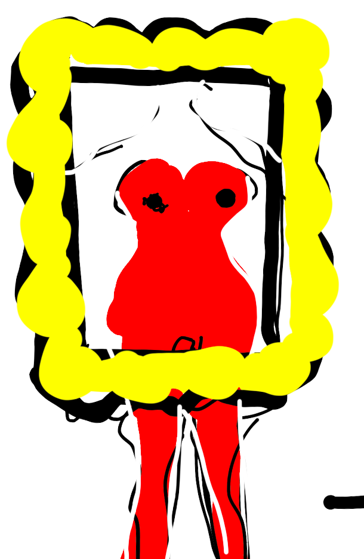
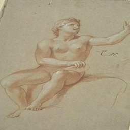
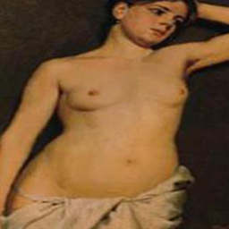
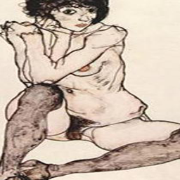
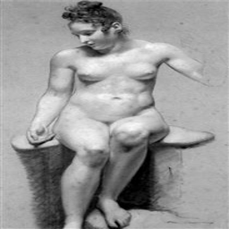
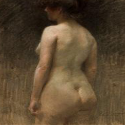
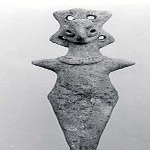

THE
FEMALE NUDITY
IN THE EYES OF
AI
place your gaze on me
keywords: generative adversarial networks (gans)
gender structure
bodily sovereignty
digital empowerment

THE transformation of the female body into the female nude is thus an act of regulation: of the female body and of the potentially wayward viewer whose wandering eye is disciplined by the conventions and protocols of art.”
Nead, Lynda. 1992. The female nude: art, obscenity, and sexuality.
6667 pieces of nudity art work in the Met Museum
over 80% are female nudity
| Europe | Africa | Asia | South America |
North Central America |
|---|---|---|---|---|
| 3937 | 209 | 109 | 16 | 1792 |
The viewing structure of the hypermasculinized viewer’s position and the objectified female position corresponds to the existing structure of the art’s creation. The project embodies a new form of embodied resistance to a normative sexual order through a non-conformist approach and the technological affordance of machine learning.
The project constitutes not an alternative but integrative narrative of the current one congealed with body and flesh. By deep learning the calculated representation of nudity and flannel shirts, the project trained a CycleGAN model to generate a clothed version of naked female portrait. The result reflects on the temporal overspill of the uneventful violence on current gender estrangement.
The project is trained on 1k nude female artworks from WikiArt, the MET, Tate, MFA, Getty, and 1k flannel shirt images.
To get the optimal results, I tested with the combination of “watercolor only * flannel shirts with head,” “watercolor only * flannel shirts only,” ”linedrawing only * flannel shirts with head,” ”linedrawing only * flannel shirts only,” “mixed * flannel shirts”... the best result I got is from the combination of “ mixed * flannel shirts with head.”
However, due to the domain mapping feature of CycleGAN, the result I got rendered the drawings more colorful and photorealistic. What I thought interesting was that the machine assigned different colors of flannel shirts to each art image, and sometimes the shirts become tank tops like what is in the open image of the webpage.
These results are cherry picking ones I got from the model, as the machine soon learned that the checkered pattern belong to something fabric, it keeps changing what seems to be the fabric in each drawing over the nudy female figure.
Please hover your mouse over the original drawings down below to see the results, and check out
the amazing original CycleGAN paper by Jun-Yan Zhu and Taesung Park
|  |  |  |  |  |  |
|---|